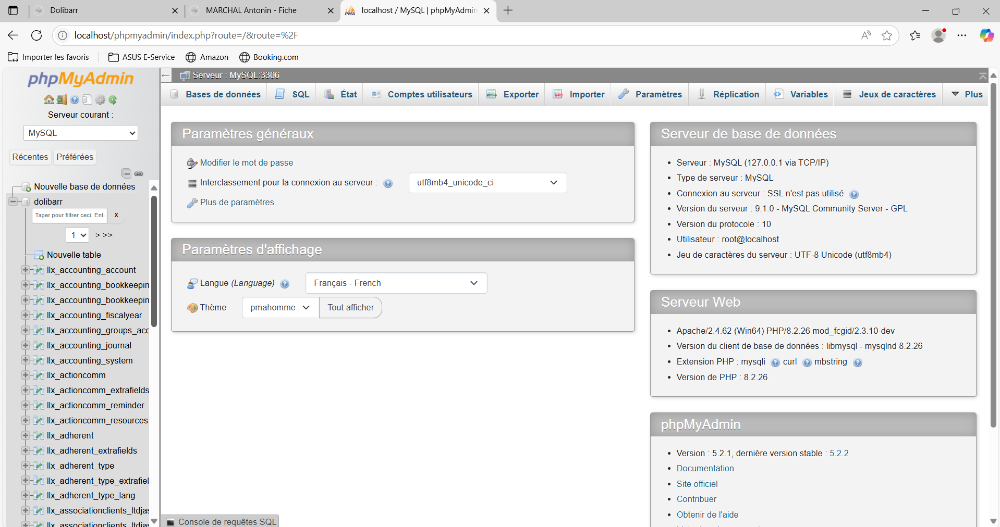

Au cours d'une manipulation de connexions sur Dolibarr, je rencontrai une erreur fréquente et bloquante, mais peu importe les modifications que je fessais ou manipulations, l'éreur restait là. Le problème ne venait pas de Dolibarr mais de sa base de données, et grâce à PHPMyAdmin l'outil dont je vais parler aujourd'hui, j'ai pu le résoudre.
Commençons par une courte présentation, PHPMyAdmin est une application web gratuite écrite en PHP qui permet d’administrer facilement des bases de données MySQL et MariaDB via une interface graphique accessible depuis un navigateur, sans avoir besoin d’utiliser directement des commandes SQL. Le dolibarr sur lequel je travaille est sous MySQL, et le SQL est un des langages de base de données que je connais probablement le mieux.
Interface de PhpMyAdmin.PhpMyAdmin est doté d'une interface permettant de manipuler la base de données sans utiliser de requêtes SQL, ce qui peut être utile pour manipuler sans se prendre la tête à écrire "the line" mais dans le Problème rencontré, il était question d'une requête envoyée par Dolibarr à la base. Le petit souci que j'ai rencontré, c'est que la requête fait dans les 4000 caractères (dans les 1000 caractères écrits dans l'article au moment où vous lisez ça) et elle n'était pas juste écrite ça aurait été trop simple, pour plus de flexibilité la requête se construisait en fonction de quel utilisateur est connecté, de l'article recherché. Donc j'ai dans un premier temps été obligé de décortiquer la requête et D'en reproduire une identique à celle que dolibarr envoie, car je n'avais aucun moyen de la récupérer. Une fois la commande récupérée, j'ai pu enfin aller la rentrer dans PHPMyAdmin pour regarder les résultats de la dite requête, résultat qui était faussé et ne correspondait pas à ce qu'il devrait être, je les ai donc corrigés en Quelques requêtes SQL.
 L'interface des requétes SQL sur PhpMyAdmin, la requéte rentré représente a peine 10% de celle dont il est question dans l'article.La moralité finale de cette histoire... c'est que le problème est uniquement lié à mon douair local, et donc Ce n'est pas un problème en soi. Mais le bon côté des choses c'est que j'ai un peu perdu mon temps mais j'ai Au moins appris à utiliser PHPMyAdmin.